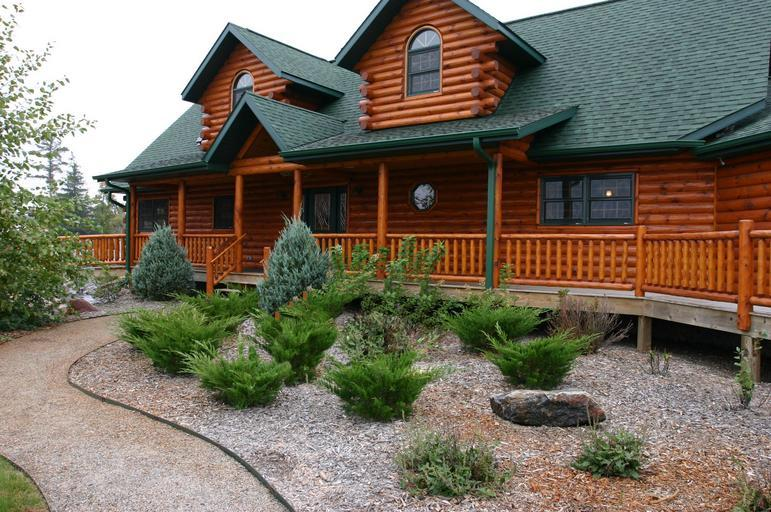
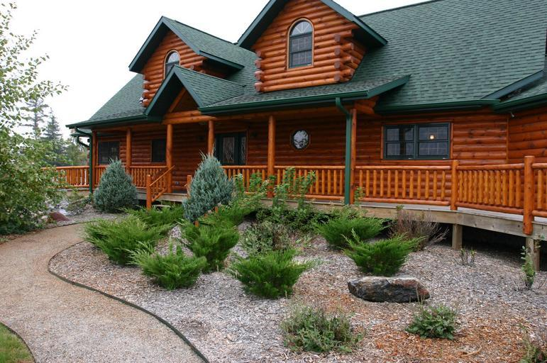

10/5/2019
- Watching and coding along: Web Developer Bootcamp on Udemy. I bought this a while back, but I hadn't cracked it open....
- I have been watching for the past week or so. Now on lesson 71. Hundreds to go. Life long journey. It feels good to see this website changing as I progress.
- Done HTML & CSS lessons.
- Going through creating a blog - and using what I have learned to update this log.
- Tic-Tac-Toe board. Photo Gallery. CSS Blog from scratch. Results below.
Tic-Tac-Toe Board
Photo Gallery
 



All images from pixabay.com